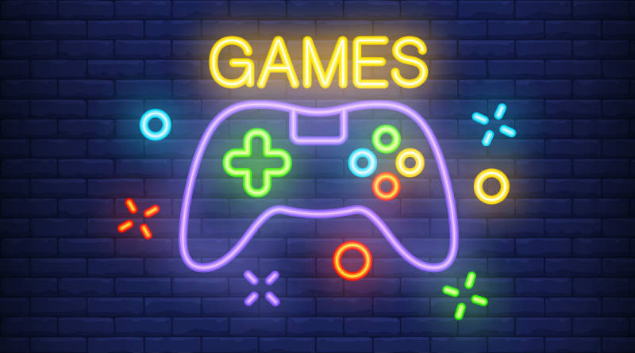

GG Videojuegos

GG Games Su Tienda Favorita De VideoJuegos Al Mas Bajo Costo Del Mercado
Pagina Principal
PC
Consolas
VideoJuegos
Accesorios
Tienda
Trucos
Noticias
Call Of Duty
Moder Warfare
God Of War
God Of War 4
Mortal Kombat 11
Mortal Kombat 11